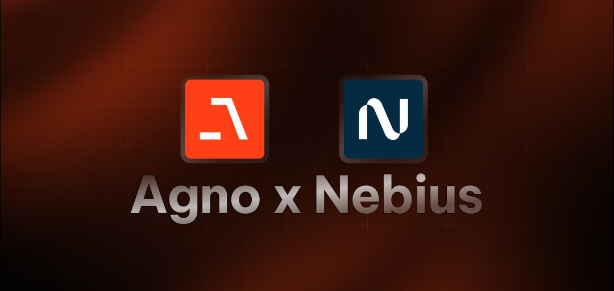

HackerNews Analysis Agent
A powerful AI agent built with Agno that analyzes and provides insights about HackerNews content. This agent uses the Nebius AI model to deliver intelligent analysis of tech news, trends, and discussions.
Features
- 🔍 Intelligent Analysis: Deep analysis of HackerNews content, including trending topics, user engagement, and tech trends
- 💡 Contextual Insights: Provides meaningful context and connections between stories
- 📊 Engagement Analysis: Tracks user engagement patterns and identifies interesting discussions
- 🤖 Interactive Interface: Easy-to-use command-line interface for natural conversations
- ⚡ Real-time Updates: Get the latest tech news and trends as they happen
References and Acknowledgements
- Agno Framework
- Nebius AI
- Contributed from awesome-ai-apps
Tech Stack
- Agno framework for AI agent development
- Nebius AI's for running LLMs. We are using
openai/gpt-oss-20breasoning model - HackerNews Tool from Agno
Prerequisites
- Python 3.10 or higher
- Nebius API key (get it from Nebius Token Factory)
Installation
1. Get the code
git clone https://github.com/nebius/token-factory-cookbook/
cd agents/agno-hacker-news-agent
2. Install dependencies:
using uv
# create a venv and install dependencies
uv sync
Or install using python pip
pip install -r requirements.txt
3 - Create .env file
Create a .env file in the project root and add your Nebius API key:
cp env.example .env
NEBIUS_API_KEY=your_api_key_here
Running the agent
Using uv
uv sync
uv run python main.py
Using python pip
python main.py
The agent will start with a welcome message and show available capabilities. You can interact with it by typing your questions or commands.
Example Queries
- "What are the most discussed topics on HackerNews today?"
- "Analyze the engagement patterns in the top stories"
- "What tech trends are emerging from recent discussions?"
- "Compare the top stories from this week with last week"
- "Show me the most controversial stories of the day"
Notebooks in this recipe: